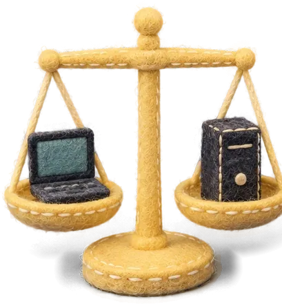

SYNKBRIEF · COMPUTER GUIDE01 / 09
SYNKBRIEF · COMPUTER GUIDE01 / 0901 / SYNKBRIEF GUIDE2026.09.27 확인
컴퓨터
AI 컴퓨터 설명서
데스크톱이냐 노트북이냐, 램·그래픽·NPU까지.
가성비로 고르는 법과 왜 그런지를 모았어요.
이 설명서는 누구에게나 같은 내용이에요. 램이 왜 필요하고 왜 비싸졌는지, 그래픽카드와 NPU는 누구에게 의미가 있는지, 내 컴퓨터를 어떻게 확인하는지 정리했어요.
내 용도에 딱 맞춘 결과는 아래 주소의 맞춤 추천에서 1분이면 나와요. 데스크톱인지 노트북인지, 램 몇 GB가 가성비인지, 나에게 필요한 팁과 AI에게 붙여 넣을 프롬프트까지 만들어 드려요.
2026년 9월 27일 기준으로 확인한 자료를 썼어요. 가격은 날마다 바뀌어서
오늘 가격은 맞춤 추천의 프롬프트로 확인하게 했어요.synk.im/brief/computer
SYNKBRIEF · COMPUTER GUIDE02 / 09
1. AI는 어디서 계산할까
웹 AI와 설치형 AI는 계산하는 곳이 달라요
ChatGPT·Claude·Gemini를 인터넷 창에서 쓰면, 어려운 계산은 AI 회사의 서버가 해요. 내 컴퓨터는 질문을 보내고 답을 보여 주는 일만 하죠. 그래서 웹 AI만 쓴다면 비싼 컴퓨터가 꼭 필요하지 않아요.
웹 AI내 컴퓨터 · 질문 입력→AI 회사 서버 · 계산→답이 화면에
설치형 AI내 컴퓨터 · 질문 입력과 계산 모두→답이 화면에
반대로 Ollama·LM Studio 같은 프로그램으로 AI를 내 컴퓨터에 설치하면, 그 계산을 전부 내 컴퓨터가 해요. 이때는 모델 파일 전체를 메모리에 올려야 해서 필요한 사양이 크게 올라가요.
컴퓨터 부품 셋, 이렇게 기억하세요
램(RAM) = 작업 책상프로그램을 펼쳐 놓고 일하는 곳. 넓을수록 여러 개를 동시에 펼칠 수 있어요.
SSD = 서랍파일과 프로그램을 보관하는 곳. 꺼낼 때 책상보다 훨씬 느려요.
그래픽카드 = 일꾼 수천 명단순한 계산을 동시에 하는 일꾼들. 전용 책상(그래픽 메모리)이 따로 있어요.
책상이 모자라면 생기는 일
램이 모자라면 컴퓨터는 당장 안 쓰는 걸 서랍(SSD)으로 잠깐 옮겨요. SSD는 램보다 훨씬 느려서, 창을 바꿀 때마다 멈칫하게 되죠. “컴퓨터가 버벅인다”의 가장 흔한 이유예요.
맥은 책상을 함께 써요
맥의 ‘통합 메모리’는 CPU와 그래픽이 한 책상을 같이 써요. 메모리 속도도 빨라서 맥북 에어(M5)는 초당 153GB, 맥 미니 M5 Pro는 초당 307GB를 옮겨요(일반 PC 램 두 개는 약 90GB). 대신 나중에 늘릴 수 없어요.
SYNKBRIEF · COMPUTER GUIDE03 / 09
2. SYNK의 가성비 원칙
필요한 만큼만, 먼저 쓸 곳에 먼저
- 추천은 두 줄이에요. ‘가성비 추천’은 하려는 일을 답답하지 않게 하는 가장 낮은 단계, ‘여유가 되면’은 다다익선으로 한 단계 위예요. 가벼운 작업만 하면 여유를 권하지 않아요.
- 램 16GB가 기준점이에요. 2026년 새 맥북 에어·맥 미니·코파일럿+ PC가 모두 16GB부터 시작해요. 새로 살 때 8GB는 권하지 않아요.
- 무거운 작업이면 데스크톱이에요. 들고 다녀야 해도 마찬가지예요. 이유는 이 쪽 아래에 있어요.
- 돈 쓰는 순서: 램(가성비 추천까지) → 그래픽카드(무거운 작업일 때, 필요한 그래픽 메모리만큼) → 저장공간(외장 SSD로 나중에) → CPU(중급이면 충분).
- 데스크톱은 나중에 늘릴 수 있어요. 램 슬롯·SSD 칸·그래픽카드를 바꿀 수 있으니 지금은 가성비로 시작해요. 노트북과 맥은 못 늘리니 여유가 되면 처음에 사요.
데스크톱일까 노트북일까
| 작업 \ 들고 다니는 정도 | 거의 책상에서만 | 가끔 들고 나감 | 자주 들고 다님 |
|---|
가벼움
웹 AI·문서·회의·캔바·웹 개발 | 데스크톱(미니 PC·맥 미니) | 노트북(집에선 모니터) | 노트북 |
중간
포토샵·짧은 FHD 편집·작은 AI(8B)·에뮬레이터 | 데스크톱 | 노트북(집에선 모니터) | 노트북 |
무거움
4K·긴 편집·3D·중간 이상 AI·이미지 생성·게임 | 데스크톱 | 데스크톱 + 밖에선 가진 기기 | 데스크톱 + 밖에선 가진 기기 |
무거운 작업에 노트북을 권하지 않는 이유
같은 이름이라도 노트북용 그래픽은 약해요. RTX 5070은 데스크톱용이 코어 6,144개·250W, 노트북용이 코어 4,608개에 훨씬 낮은 전력이에요. 처음 나온 노트북용은 그래픽 메모리도 8GB였어요(데스크톱 12GB). 노트북은 오래 쓰면 열 때문에 속도를 낮추고, 램·그래픽카드를 바꿀 수 없어요. 같은 성능이면 값도 더 비싸요. PCWorld
무거운데 들고 다녀야 한다면
밖에서는 가진 기기(휴대폰·태블릿·쓰던 노트북)로 웹 AI와 문서를 하고, 무거운 작업은 집 데스크톱에서 하세요. 원격 데스크톱으로 밖에서 집 컴퓨터를 켜서 쓸 수도 있어요. 노트북 한 대로 다 하려면 2kg이 넘고 배터리가 짧은 고성능 노트북이 필요해서 SYNK는 권하지 않아요.
SYNKBRIEF · COMPUTER GUIDE04 / 09
3. 램
4GB부터 64GB까지, 책상 크기로 보면
| 램 | 이런 분께 | 근거 |
|---|
| 4GB | 윈도우 11의 최소 사양이에요. 켜기만 해도 책상이 거의 차요. 새로 사는 건 권하지 않아요. | 공식 Microsoft |
| 8GB | 웹 AI·문서·온라인 강의는 돼요. 탭을 많이 열거나 회의를 함께 하면 느려져요. 새로 산다면 권하지 않아요. | SYNK 판단 |
| 16GB | 가성비 기준점. 웹 AI, 짧은 FHD 편집, 포토샵, 작은 AI 모델(8B)까지 무난해요. | 공식 Apple·Microsoft 기본 구성 |
| 24GB | 맥에서 고를 수 있는 구성이에요. 맥으로 14B급 AI나 긴 FHD 편집을 하려면 가성비예요. | 공식 Apple 구성 |
| 32GB | 4K 편집, 큰 사진, 이미지 생성, 에뮬레이터·도커의 가성비 기준이에요. | 공식 Adobe 권장 |
| 48~64GB | 맥으로 32B급 AI(48GB), 긴 4K 편집의 여유 선택(64GB)이에요. | SYNK 판단 |
램은 왜 이렇게 비싸졌을까
- AI 데이터센터용 칩에 들어가는 특수 메모리 HBM은 같은 1GB를 만드는 데 일반 램(DDR5)보다 반도체 원판을 약 3배 써요. 메모리 회사들이 HBM으로 생산을 돌리면서 일반 램이 모자라졌어요. Tom’s Hardware
- 2025년 9월 135달러였던 DDR5 32GB 세트가 12월엔 420달러를 넘었어요. Tom’s Hardware
- D램 칩을 만드는 큰 회사는 삼성전자·SK하이닉스·마이크론 세 곳이에요. 그중 마이크론이 AI 데이터센터에 집중하겠다며 2026년 2월을 끝으로 소비자용 크루셜 램 판매를 접었어요. Micron 발표
- TrendForce는 2026년 2분기 D램 계약 가격이 약 60% 올랐고 3분기에도 13~18% 더 오른다고 봤어요. TrendForce
그래서 16GB에서 32GB로 올리는 값이 예전보다 훨씬 커요. 가벼운 작업이면 16GB로 충분하고, 데스크톱은 모자랄 때 더 꽂으면 돼요. 노트북은 램이 기판에 붙어 나중에 못 늘리는 경우가 많으니 “램 증설이 되나요?”를 꼭 물어보세요.
SYNKBRIEF · COMPUTER GUIDE05 / 09
4. 그래픽카드
그래픽카드는 왜 필요하고, 왜 비쌀까
왜 필요할까
- CPU가 뭐든 잘하는 일꾼 몇 명이라면, 그래픽카드는 단순한 계산을 동시에 하는 일꾼 수천 명이에요. RTX 5070에는 코어가 6,144개 있어요.
- 전용 책상인 그래픽 메모리(VRAM)가 붙어 있어요. RTX 5070은 이 메모리에서 초당 672GB를 옮겨요. 일반 PC 램(초당 약 90GB)보다 7배 넘게 빨라요. TechSpot
- AI는 답 한 글자를 만들 때마다 모델 전체를 훑어요. 모델이 그래픽 메모리에 통째로 들어가야 빨라요. 영상 편집의 효과·미리보기, 3D 렌더링, 게임 화면도 그래픽카드가 맡아요.
왜 비쌀까
- 그래픽카드 값의 큰 부분이 그래픽 메모리(GDDR7)예요. 엔비디아가 2026년에 제조사에 파는 칩·메모리 묶음 가격을 올려 매장 가격이 20~30% 올랐어요. TechPowerUp
| 그래픽카드(데스크톱) | 그래픽 메모리 | 출시 가격 | 2026년 8월 미국 중간 가격 |
|---|
| RTX 5060 | 8GB | 299달러 | 약 470달러 |
| RTX 5060 Ti 16GB | 16GB | 429달러 | 약 805달러 |
| RTX 5070 | 12GB | 549달러 | 약 900달러 |
| RTX 5090 | 32GB | 1,999달러 | 약 4,700달러 |
출처: 출시 가격 TechPowerUp·Tom’s Hardware, 중간 가격 wccftech 2026-08-11(Tom’s Hardware 집계). 한국 가격과 오늘 가격은 다를 수 있어요.
얼마나 필요할까 (윈도우 기준, SYNK 가성비)
| 작업 | 가성비 | 여유가 되면 |
|---|
| 웹 AI·문서·회의·짧은 편집 | 내장 그래픽 | — |
| 4K·긴 편집, 3D, 게임 | 8GB (예: RTX 5060) | 12~16GB |
| 중간 대화 AI(14B), 이미지 생성 | 12GB 이상 (8월 시세로는 5060 Ti 16GB가 5070보다 쌈) | 16GB |
| 큰 대화 AI(32B) | 24GB 이상(RTX 5090급뿐) | 맥 48GB·웹 구독과 비교 |
SYNKBRIEF · COMPUTER GUIDE06 / 09
5. 프로그램별 권장 사양
쓸 프로그램이 정해졌다면, 이 표부터
2026년 9월 27일에 각 회사 안내를 확인했어요. 업데이트로 바뀔 수 있으니 사기 직전에 한 번 더 보세요.
| 프로그램 | 공식 최소 램 | 공식 권장 램 | 그래픽 |
|---|
| 포토샵 Adobe | 8GB | 16GB 이상 | 1.5GB · 4K 화면이면 4GB |
| 프리미어 프로 Adobe | 16GB(애플 실리콘 영상 편집) | 32GB 이상(윈도우) | 그래픽 메모리 4GB 이상 |
| 다빈치 리졸브 20 Blackmagic | 16GB(윈도우) | 32GB(퓨전 효과 사용) | 그래픽 메모리 4GB 이상 |
| 파이널 컷 프로 Apple | 8GB · 맥 전용 | 16GB | 맥 통합 메모리 |
| 캡컷(윈도우) CapCut | 4GB | — | 인텔 HD 4000 이상 |
| 블렌더 Blender | 8GB | 32GB | 2GB · 권장 8GB |
내 컴퓨터에 AI를 설치한다면
숫자 뒤의 B는 ‘10억 개’라는 뜻이에요. 파일 크기는 Ollama 공식 라이브러리의 압축판 기준이에요. 맥은 모델이 통합 메모리에, 윈도우는 그래픽 메모리에 올라가요.
| 모델 크기 | 파일 크기 Ollama | 맥 가성비 메모리 SYNK | 윈도우 그래픽 메모리 SYNK |
|---|
| 4B·8B | 2.5GB · 5.2GB (Qwen3) | 16GB | 없어도 됨(8GB면 빨라짐) |
| 14B | 9.3GB (Qwen3) | 24GB | 12GB 이상 |
| 32B | 20GB (Qwen3) | 48GB(맥 미니 M5 Pro) | 24GB 이상 |
| 70B | 43GB (Llama 3.3) | 128GB(맥 스튜디오) | 일반 그래픽카드로는 어려움 |
| 이미지 생성 | 모델마다 다름 | 32GB(느린 편) | SDXL급 8GB · FLUX급 12~16GB 커뮤니티 |
대화 AI는 웹 AI 유료 구독과 비교해 보세요. 큰 모델용 장비값이면 구독을 몇 년 쓸 수 있어요.
SYNKBRIEF · COMPUTER GUIDE07 / 09
6. NPU와 저장공간
NPU(‘AI PC’)는 누구에게 필요할까
NPU는 가벼운 AI 기능을 전기를 적게 쓰며 계속 돌리는 작은 AI 전용 칩이에요. 코파일럿+ PC는 NPU 성능이 40 TOPS 이상이어야 해요. 인텔 코어 울트라 200V·300V, AMD 라이젠 AI 300·400, 스냅드래곤 X가 여기에 해당해요. Microsoft
의미 있는 경우
- 윈도우 화상회의 효과: 배경 흐림·시선 맞춤·목소리 또렷하게(줌·팀즈·미트 어디서나)
- 실시간 번역 자막, Recall·Click to Do 같은 윈도우 기능
- 포토샵의 선택·배경 제거·노이즈 제거·업스케일, 캡컷의 배경 지우기·얼굴 추적, 다빈치 리졸브의 일부 마스크·업스케일(스냅드래곤 중심)
- 노트북 배터리를 아끼는 것이 가장 큰 장점
차이 없는 경우
- ChatGPT·Claude·Gemini 같은 웹 AI: 서버가 계산해요
- 내 컴퓨터에 설치한 대화 AI: Ollama·LM Studio는 2026년 중반까지 NPU를 안 쓰고 그래픽카드·CPU로 돌아가요
- 게임
- 그래픽카드가 있는 데스크톱: 그래픽카드가 훨씬 빨라요
- 맥: 모든 맥에 뉴럴 엔진이 있고, 설치형 AI는 GPU를 써요
함정 두 가지
① 자막만 켜는 건 NPU 없이 모든 윈도우 11(22H2 이후)에서 돼요. NPU가 필요한 번역 자막은 40여 개 언어를 영어로, 27개 언어를 중국어(간체)로만 번역해요. 한국어로는 번역되지 않아요. Microsoft
② TOPS 숫자가 커도 대화 AI는 빨라지지 않아요. 대화 AI의 속도는 메모리 크기와 속도가 정해요. 보도·분석
결론: 코파일럿+ 칩은 중급 노트북에도 흔히 쓰여요. NPU 때문에 더 비싼 걸 살 필요는 없어요. 그 돈은 램에 쓰세요.
저장공간(SSD)은 내장은 알맞게, 나머지는 외장으로
SSD의 메모리도 AI 서버가 많이 사 가면서 값이 올랐어요. 2025년 여름 80달러였던 2TB SSD가 11월엔 130달러가 됐어요 Tom’s Hardware. 기본은 512GB, 긴 영상·AI 모델·게임은 1TB가 가성비예요. 끝난 영상과 모델 파일은 외장 SSD로 옮기세요. 맥은 내장 SSD를 나중에 바꿀 수 없고, 데스크톱 PC는 SSD를 한 칸 더 달 수 있어요.
SYNKBRIEF · COMPUTER GUIDE08 / 09
7. 내 컴퓨터부터 확인하기
사기 전에, 지금 컴퓨터부터 보세요
하려는 일을 지금 컴퓨터로 한 번 해 보는 게 가장 정확한 시험이에요. 실제로 막히는 순간이 생기면 그때 바꿔도 늦지 않아요.
램이 몇 GB인지
- 윈도우: 시작 → 설정 → 시스템 → 정보 → ‘설치된 RAM’
- 맥: 화면 왼쪽 위 애플 메뉴 → 이 Mac에 관하여 → ‘메모리’
지금 램을 얼마나 쓰는지
- 윈도우: 작업 관리자(Ctrl+Shift+Esc) → 성능 → 메모리
- 맥: 활성 상태 보기 → 메모리 → ‘메모리 압박’ 그래프
- 평소 작업을 켜 둔 채로 보세요. 늘 가득 차 있다면 책상이 좁은 거예요.
그래픽 메모리와 NPU가 있는지 (윈도우)
- 작업 관리자 → 성능 → GPU → ‘전용 GPU 메모리’. NPU가 있으면 같은 화면에 ‘NPU’ 항목이 보여요.
운영체제 지원이 끝나지 않았는지
- 윈도우 10은 2025년 10월 14일에 일반 지원이 끝났어요. Microsoft의 ‘PC 상태 검사’ 앱으로 윈도우 11로 바꿀 수 있는지부터 확인하세요.
- 인텔 맥은 macOS 26 Tahoe가 마지막 macOS예요(Apple WWDC25 발표). 앞으로 새 프로그램 지원이 줄어요.
가장 싼 해결부터
지금 컴퓨터가 데스크톱이면 램만 더 꽂는 게 가장 싸요(빈 램 슬롯 확인). 지금 컴퓨터가 노트북인데 작업이 무거워졌다면, 노트북은 밖에서 계속 쓰고 데스크톱을 더하세요. 느린 이유가 램이 아닐 수도 있어요. 저장공간이 거의 찼는지, 켤 때 함께 실행되는 프로그램이 많은지도 보세요.
SYNKBRIEF · COMPUTER GUIDE09 / 09
- 데스크톱인지 노트북인지: 무거운 작업이면 데스크톱
- 램 용량, 그리고 나중에 늘릴 수 있는지(데스크톱은 빈 슬롯)
- 그래픽카드의 그래픽 메모리(VRAM) 숫자: ‘게이밍’보다 숫자, 같은 메모리면 싼 모델
- 저장공간이 SSD인지, 용량은 얼마인지
- 윈도우가 설치돼 있는지: ‘FreeDOS’나 ‘OS 미포함’이면 따로 사야 해요
- NPU·‘AI PC’ 표시 때문에 더 비싼 걸 고르지 않았는지
- 모니터·키보드까지 합친 총액(데스크톱), 본체·충전기 무게(노트북)
- 보증 기간과 수리 받는 곳
AI에게 이렇게 물어보세요
[ ] 안만 바꾸세요. 맞춤 추천을 받으면 이 칸이 내 결과로 채워진 프롬프트를 드려요.
너는 가성비를 중시하는 컴퓨터 구매 상담 조수야. 아래 조건에 맞는 컴퓨터를 오늘 기준으로 찾아줘.
[내 상황] 하려는 일: [예: 웹 AI·문서, 캡컷으로 쇼츠 편집] / 들고 다니는 정도: [거의 책상 / 가끔 / 자주] / 운영체제: [맥 / 윈도우 / 상관없음] / 총예산: [금액]
[필요한 사양] 형태: [데스크톱 / 노트북] / 램: [16GB] / 저장공간: SSD [512GB] / 그래픽: [내장 또는 그래픽 메모리 ○GB 이상]
[요청] 1. 한국에서 살 수 있는 후보 3개를 가성비 좋은 순서로 비교표로(모델명, 램, 저장공간, 그래픽, 가격, 판매처 링크).
2. 같은 사양이면 더 싼 쪽을 먼저, 한 세대 전 모델·조립 PC 견적도 포함. 3. 가격은 오늘 확인한 값과 출처, 모르면 ‘확인 필요’.
4. NPU나 ‘AI PC’ 표시 때문에 비싸진 모델이면 알려줘.
출처 (2026-09-27 확인)
- Microsoft · Windows 11 사양·Copilot+ PC 조건 · Copilot+ PC 기능: microsoft.com · 실시간 자막과 번역 언어: support.microsoft.com
- Microsoft · PC 상태 검사와 Windows 10 지원 종료: support.microsoft.com
- Apple · MacBook Air(M5) 사양 support.apple.com/en-us/126320 · 새 Mac mini·Mac Studio(2026-09) apple.com/newsroom · Final Cut Pro 사양
- Adobe · Premiere 메모리·GPU 권장(2026-01-07) · Photoshop 요구 사양: helpx.adobe.com
- Blackmagic · DaVinci Resolve 20 최소 사양(SAMDB 2025-09-23 인용) · CapCut 윈도우 사양 · Blender 요구 사양
- Ollama 라이브러리 · Qwen3·Llama 3.3 파일 크기 · ComfyUI Wiki 그래픽카드 가이드(커뮤니티)
- Tom’s Hardware 2025-12-19(HBM·램·SSD 가격) · 2026-07-04(TrendForce) · Micron 발표 2025-12-03(크루셜 종료)
- TechPowerUp 2026-07-23(GDDR7 묶음 가격) · wccftech 2026-08-11(그래픽카드 중간 가격) · TechSpot·PCWorld(RTX 5070 데스크톱·노트북)
- Windows Central 2026-04-05(NPU 앱) · Redrag 2026-07-25(Ollama·LM Studio와 NPU) · Contra Collective 2026(맥 뉴럴 엔진) · PetaPixel 2025-06-10(Tahoe)